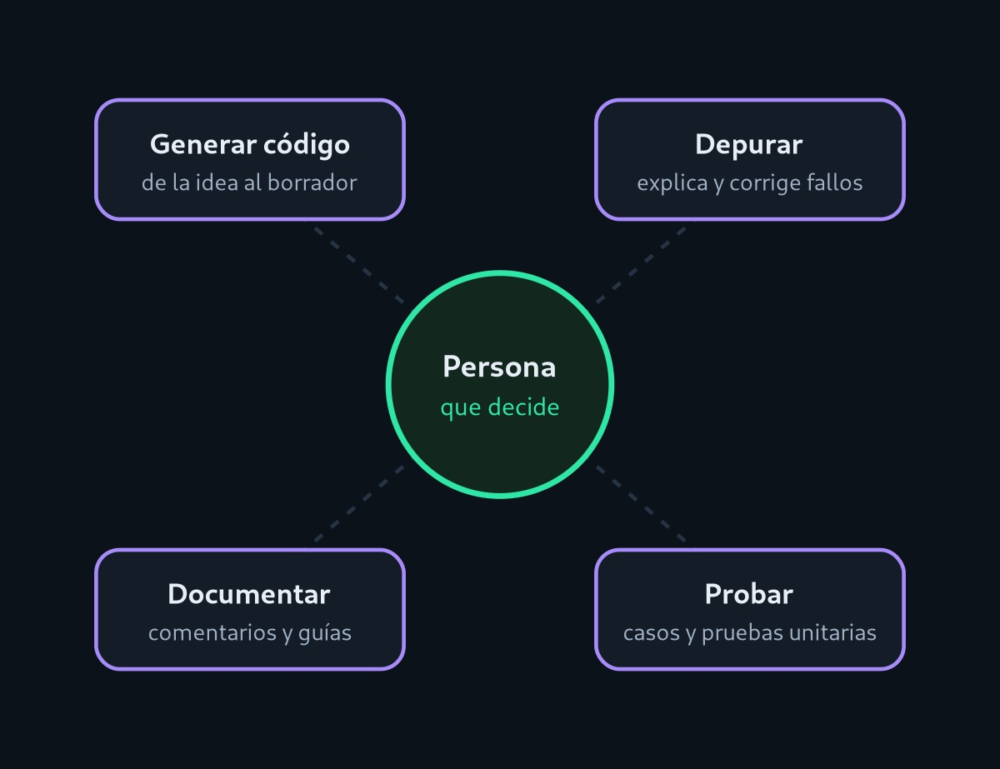

Proyecto del Parcial 2 - Desarrollo de Software V
Inteligencia Artificial aplicada al Desarrollo de Software
Cómo los asistentes de IA entienden una instrucción, proponen código y por qué la última palabra sigue siendo de la persona que programa.
// Instrucción: "Calcula el promedio de las notas"
function promedio(notas) {
const validas = notas.filter(Number.isFinite);
if (validas.length === 0) return 0;
const suma = validas.reduce((a, b) => a + b, 0);
return suma / validas.length;
}
¿Qué es la Inteligencia Artificial aplicada al desarrollo de software?
Es el uso de modelos de inteligencia artificial, sobre todo modelos de lenguaje de gran tamaño, como apoyo en tareas de ingeniería de software: escribir código, encontrar errores, documentar y probar programas.
Un asistente recibe una instrucción en lenguaje natural («haz una función que valide un correo») y responde con una propuesta de código. No comprende el programa como lo haría una persona: genera la continuación más probable a partir de los enormes volúmenes de texto y código con los que fue entrenado [4].
Por eso la IA acelera el trabajo, pero no lo reemplaza: el código propuesto es un borrador que alguien debe leer, probar y aceptar o rechazar. Esa idea guía todo este sitio.
Idea central: la IA propone, la persona verifica y decide.

Vocabulario mínimo
Cuatro términos que aparecerán en las demás páginas.
- Modelo de lenguaje
- Sistema entrenado para predecir el texto que sigue a una secuencia. Con suficientes datos de código, también predice código.
- Prompt
- La instrucción y el contexto que se entregan al modelo. Su calidad influye mucho en la calidad de la respuesta.
- Token
- Fragmento de texto (palabra, parte de palabra o símbolo) con el que el modelo trabaja internamente.
- Contexto
- Todo lo que el modelo «ve» al responder: tu instrucción, el código abierto y la conversación previa. Su tamaño es limitado.
De los autocompletados a los agentes
Una síntesis de cómo llegamos hasta aquí. Las fechas corresponden a publicaciones y lanzamientos conocidos:
- 2017
La arquitectura Transformer
Se publica «Attention Is All You Need», base técnica de los modelos de lenguaje actuales.
- 2020
Modelos que aprenden con ejemplos
GPT-3 muestra que un modelo grande puede resolver tareas nuevas a partir de unas pocas muestras en el prompt.
- 2021
Modelos especializados en código
Codex, entrenado con código público, resuelve problemas de programación y da origen a GitHub Copilot.
- 2022
Asistentes conversacionales
El ajuste con retroalimentación humana permite que los modelos sigan instrucciones y mantengan un diálogo.
- Hoy
Agentes dentro del repositorio
Los asistentes ya no solo sugieren líneas: leen el proyecto, ejecutan pruebas y proponen cambios completos.
Recorrido del sitio
Puedes leer en orden o saltar directamente a la demostración.